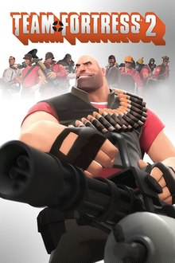

What is the Source Engine?
The Source Engine is a 3D game engine created by Valve in 2004, it is the successor to GoldSrc. Source has been used by Valve, third-party companies, and (much like GoldSource) countless community mods by people around the globe. The Source is very flexible and powers a lot of popular games such as the ones in the table below.
Terms and definitions
Source - The game engine that we will be talking about.
SDK - Stands for Source development kit and is the bundle/tool to make maps and mods for the source engine.
Authoring tool - In this instance is the same thing as SDK just a different name.
Valve - The company who owns the steam platform as well as the creators of the source engine.
Hammer Editor - This is the main tool for creating maps for games in the source engine this is also reffered to as a world editor.
Popular Games
| Name | Year Released | Version of Source | Cover art |
|---|---|---|---|
| Apex Legends | 2019 | Heavily modified version of sdk 2013 |  |
| Titanfall 2 | 2016 | Heavily Modified version of sdk 2013 |  |
| Counter-Strike: Global Offensive | 2012 | CSGO engine branch |  |
| Portal 2 | 2011 | Portal 2 engine branch |  |
| Left 4 Dead 2 | 2009 | L4D engine branch |  |
| Team Fortress 2 | 2007 | Curently uses Source 2013 Multiplayer branch |  |
| Portal | 2007 | Curently uses Source 2013 singleplayer branch |  |
| Half-life 2 | 2004 | Curently uses Source 2013 singleplayer branch |  |
How to get started
First you are going to want to install steam, which can be found here.
Next you are going to want to decide what game you want to make maps for since in order to have access to the SDK you are going to need to download the game and or buy the game. Some games like Team Fortress 2 and Counter-Strike are free but other games such as Left 4 Dead 2 and Half-life 2 cost money.
Once you have decided what game you want to make maps for and downloaded it, you are going to want to navigate to your library on steam, then at the top left there is a drop-down that says games. You are going to click the drop-down and select tools. From there you should see a list of steams sdk's and dedicated server applications. Find the name of the game you want to make maps for (EX: Left 4 Dead 2 Authoring tools or Counter-strike: Global Offensive SDK) From there select the tool that matches the game you want and click install.
Congratulations you have installed your first SDK. Once the installation is complete click the green button that says play. This will launch the authoring tools/SDK.
From here you are going to want to select the hammer editor in the menu. This is what you will be mainly using to make the actual map itself, the SDK provides textures from the game that you installed with your SDK along with models, animations, sounds and game logic. In the resources tab on this website I have linked the official documentation for a few of SDK's along with a few Youtubers and their respective tutorials on creating your first map.
Good luck and have fun!